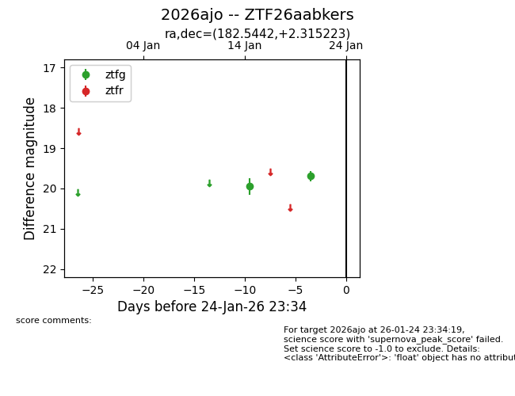
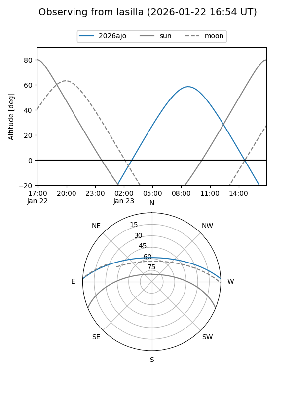
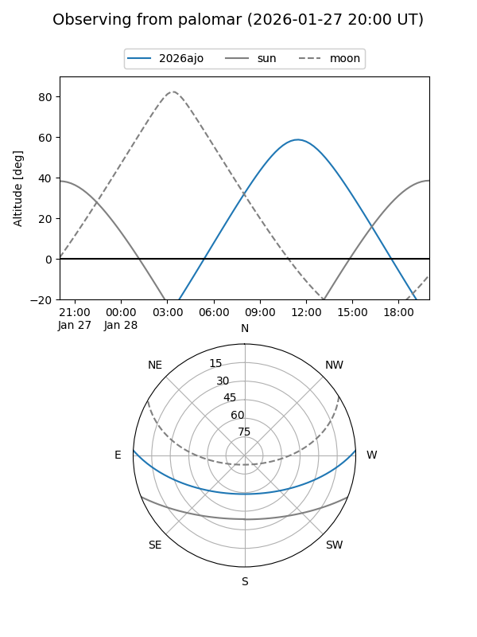

2026ajo
Target 2026ajo at 2026-01-27 23:01
Aliases and brokers:
FINK: link
Lasair: link
ALeRCE: link
TNS: link
YSE: link
alt names
ZTF26aabkers (ztf,fink_ztf)
2026ajo (tns,yse)
ATLAS26azd (atlas)
PS26mr (panstarrs)
Coordinates:
equatorial (ra, dec) = 182.5442,+2.31522
equatorial (HMS+DMS) = 12:10:10.60,+02:18:54.80
galactic (l, b) = (279.4730,+63.29206)
Flags:
Photometry:
last ztfg=19.69
2 ztfg detections
Lightcurve

Visibility


Additional plots